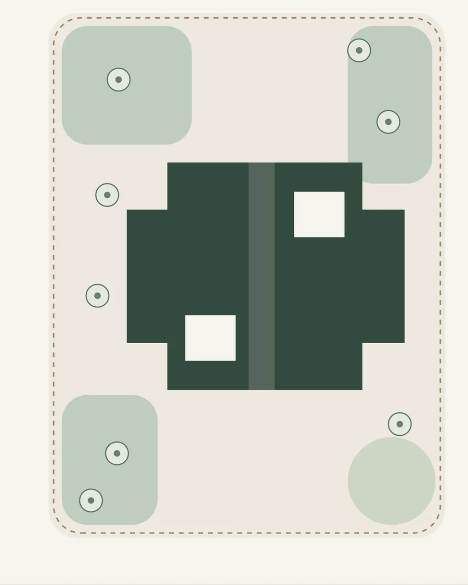
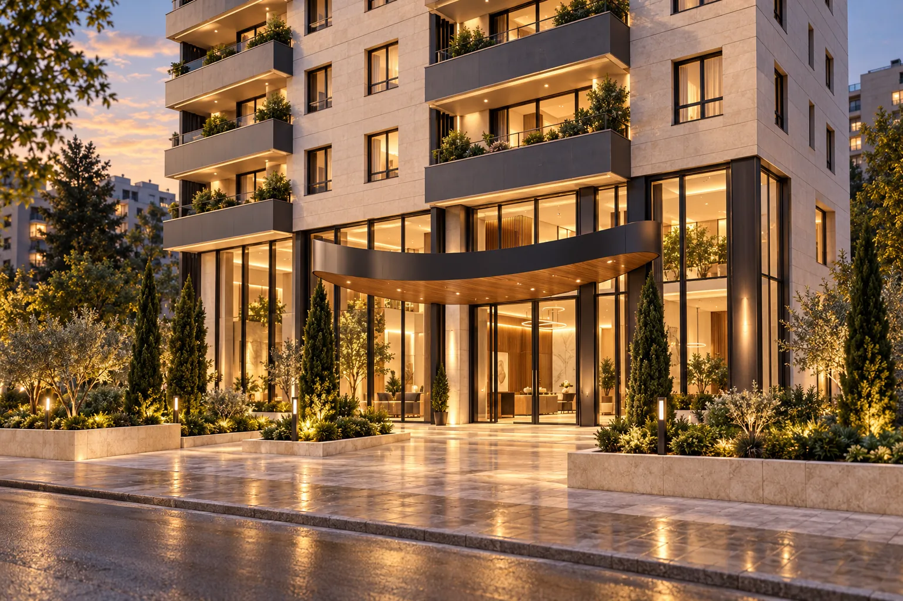
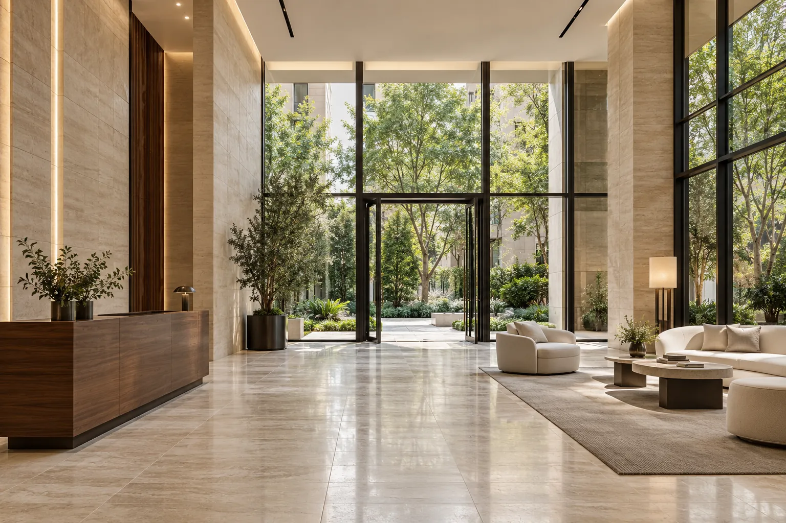

حضوری شاخص در افق شهر
برج گنجینه افق، تهران، ازگل؛ با نگاهی فراتر از ساخت یک مجموعه مسکونی.

* ارقام بر پایهی اطلاعات ارائهشده است؛ مبنای اندازهگیری و تعریف مساحت فضای سبز نیازمند تأیید در مدارک پروژه است.

خانهای فراتر از یک نشانی
گنجینه افق با نگاهی فراتر از ساخت یک مجموعه مسکونی شکل گرفته است؛ فضایی که معماری معاصر، آرامش طبیعت و کیفیت زندگی روزمره را در کنار یکدیگر قرار میدهد.
از نحوه ورود به مجموعه تا چشمانداز واحدها، از فضاهای جمعی تا جزئیات داخلی، هر بخش با هدف خلق تجربهای منسجم، آرام و ماندگار طراحی شده است.
حجم بنا، فضای باز و کاشت
زمینی به مساحت ۲٬۰۶۴ متر مربع، با بیش از ۱٬۴۰۰ متر مربع فضای سبز پیرامون ساختمان؛ در اینجا بهصورت رابطهای شماتیک نشان داده شده است. گونههای گیاهی و پرداختها هنوز مشخص نشده است.
- حجم بنا
- فضای باز
- کاشت مفهومی
- محدودهی مفهومی
نمودار مفهومی؛ ابعاد و جانمایی نهایی نیازمند نقشهی مصوب است.


ورود، آغاز تجربه
حرکتی آرام از شهر به فضای خصوصی خانه.
از خیابان تا لابی
روایتی پیوسته از ورود خودرو، مسیر پیاده و فضای استقبال.
- ۰۱
ورود خودرو
آغاز مسیر از درِ ورودی سواره.
- ۰۲
ورودی پیاده
مسیری روشن و جدا از ترافیک سواره.
- ۰۳
فضای استقبال
لابی بهعنوان اولین برداشت ماندگار.
اولین برداشت، ماندگار
مقیاس، نور و کیفیت متریال در یک قاب آرام؛ فضایی روشن و خوانا که مسیر ورود، پذیرش و دسترسی به بخشهای داخلی را در یک توالی آرام تعریف میکند.
- ۰۱
پذیرش
نقطهای روشن و در دسترس.
- ۰۲
کنترل ورود
تعریف مرز خصوصی سکونت.
- ۰۳
نور طبیعی
ارتباط مستقیم با محوطه.
سنگ روشن، چوب و شیشهی رو به فضای سبز، طرح مفهومی ورودی را معرفی میکنند. این مطالعهی تصویری، چیدمان یا مشخصات نهایی لابی را تأیید نمیکند.

پالت آرام و ماندگار
ترکیبی از چوب گرم، سنگ روشن، سطوح تیره و فلزات مات.
پالت مفهومی؛ نمونههای نهایی متریال پس از تأیید طراحی اجرایی ارائه میشود.
راهنمای این ارائه
تصاویر
تصاویر مفهومی تولیدشده؛ مبلمان، دید و اجرای نهایی ممکن است متفاوت باشد.
پلان و مساحت
پلانها بدون مقیاساند. مساحت و ابعاد نیازمند تأیید نقشههای مصوب پروژه است.
امکانات و مصالح
امکانات، برندها و اقلام تحویلی تابع مدارک و قرارداد پروژه است.
تأییدات فنی
تصویر هلیپد، تأیید مجوز نیست؛ سازه، دسترسی، خروج و تأسیسات تابع مدارک مصوب است.
داستان معماری را کامل ببینید
از مفهوم تا نما، از نور تا چشمانداز؛ صفحهی معماری لایههای طراحی برج را باز میکند.